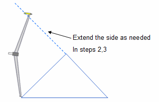
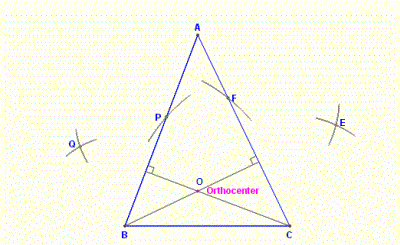

This page shows how to construct the orthocenter of a triangle with compass and straightedge or ruler. For a more, see orthocenter of a triangle. The orthocenter is the point where all three altitudes of the triangle intersect. An altitude is a line which passes through a vertex of the triangle and is perpendicular to the opposite side. There are therefore three altitudes in a triangle. It works using the construction for a perpendicular through a point to draw two of the altitudes, thus location the orthocenter.

*Note If you find you cannot draw the arcs in steps 2 and 3, the orthocenter lies outside the triangle. See Orthocenter of a triangle.The above animation is available as a printable step-by-step instruction sheet, which can be used for making handouts or when a computer is not available.

| Argument | Reason | |
|---|---|---|
| 1 | CQ is perpendicular to AB | By construction. See Perpendicular to a line from an external point with compass and straightedge for method and proof. |
| 2 | CQ is an altitude of the triangle ABC | An altitude of a triangle is a line segment through a vertex and perpendicular to the opposite side. |
| 3 | BE is perpendicular to AC | By construction. See Perpendicular to a line from an external point with compass and straightedge for method and proof. |
| 4 | BE is an altitude of the triangle ABC | An altitude of a triangle is a line segment through a vertex and perpendicular to the opposite side. |
| 5 | O is the orthocenter of the triangle ABC | The orthocenter of a triangle is the point where its altitudes intersect |
The three altitudes all intersect at the same point so we only need two to locate it. The proof for the third one is similar to the above.